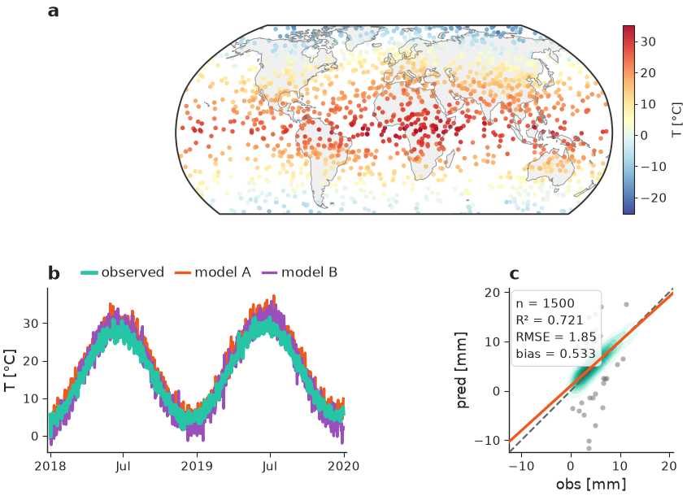
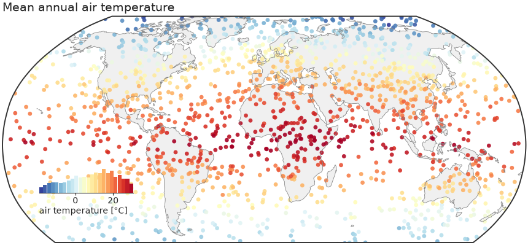

nicefigs¶
Publication-grade, modular matplotlib plotting for geoscience.
nicefigs is a thin, composable layer on top of matplotlib. It gives you a
single consistent house style (sans-serif, journal-like), physical
figure sizing that keeps fonts consistent across every panel, and a toolbox of
geoscience-ready plots: global/regional maps, ternary maps & scatters, image
grids, tight colorbars, KDE agreement plots, model-comparison violins,
timeseries, and map animations.

Design philosophy¶
One consistent house style. A small, explicit Theme
dataclass bundles font sizes, line widths, and colours. Call
nicefigs.set_theme("paper") once and every helper —
maps, scatter plots, heatmaps, timeseries — renders with matching fonts,
tick sizes, and spine weights.
Physical figure sizing. You almost never want to think in inches. You
want "a single-column figure" or "half the text width". Because
font sizes live in points and figure sizes live in inches,
nicefigs.figure / nicefigs.subplots
solve the figure size from a named physical target (width="single",
width="half", ...) and an aspect ratio. The rendered figure lands at
exactly the requested physical size, with fonts at exactly the theme's point
sizes — so a multi-panel paper figure looks consistent whether one panel is a
map and another is a scatter plot.
Modular, composable helpers. Every plotting function accepts an existing
ax (or fig) where it makes sense, so you can drop nicefigs pieces into
your own matplotlib layouts — a GridSpec, a plt.subplots grid, an inset
axes — rather than being handed a fixed figure you have to fight with. The
composite figure example shows a map, a timeseries,
and an agreement plot composed into one GridSpec, all sharing one theme and
one physical width.
Install¶
pip install nicefigs
# with cartopy-backed map projections
pip install "nicefigs[maps]"
# with xarray input helpers
pip install "nicefigs[xarray]"
# both
pip install "nicefigs[all]"
A first example¶
The figure above is built from three independently composable pieces —
a map, a timeseries, and an agreement plot — arranged in a GridSpec, all at
one consistent physical width. See it fully worked through in the
Gallery and Quickstart.
import nicefigs as nf
from nicefigs import data
nf.set_theme("paper")
lon, lat, temp = data.global_points(field="temperature")
fig, ax, m = nf.map(
lon, lat, temp,
cmap="RdYlBu_r",
colorbar_label="air temperature [°C]",
title="Mean annual air temperature",
)
nf.save(fig, "figures/global_map", formats=("pdf", "png"))

Continue to the Quickstart or browse the full Gallery for every plot family, or jump straight to the API Reference.